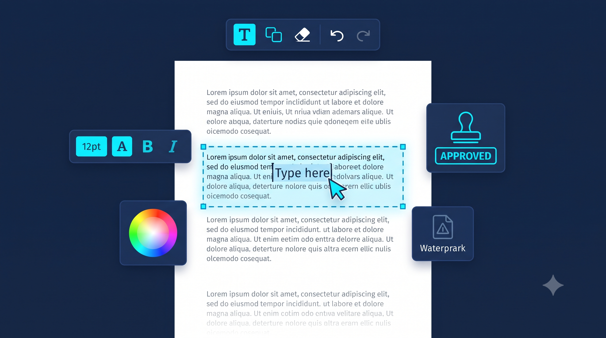

PDF Editor with Auto Font Detection
Click any text — the editor automatically matches its exact font, size & ink color.
Select or Drop PDF Document
Auto-detects font family, weight, size & ink color from any text-based PDF
How the Auto Font Detection Works
When you load a PDF, this editor reads the font metadata that PDF.js extracts from each font descriptor embedded in the document. The font's FontFamily field, its weight hints (Bold, Heavy, Black), and its style hints (Italic, Oblique) are all preserved and used to reconstruct the exact typography of any text block you click.

📷 [Place Demo Here: assets/images/pdf-editor-demo.jpg]What gets detected automatically:
- Font family — read from the PDF font descriptor's
FontFamilyfield, with intelligent fallbacks to theBaseFontname or generic category - Font size — computed from the text transform matrix, so scaled and rotated text is sized correctly
- Font weight — detected from "Bold", "Heavy", "Black", "SemiBold", "Demi" in the font name
- Font style — detected from "Italic" or "Oblique" in the font name
- Ink color — sampled by building a color histogram over the text's bounding box, filtering out the background color, and averaging the remaining ink pixels (works on white-on-dark text too)
FAQ
Q: Why does some text look slightly different after editing?
PDFs embed subsetted fonts whose exact glyph outlines are unique to that document. The editor maps the detected category (serif/sans/mono/condensed) to the closest matching Google Font for on-screen editing, and uses PDF-standard fonts (Helvetica/Times/Courier) for export. The result is visually near-identical but not byte-perfect.
Q: What if a PDF is scanned?
Scanned PDFs contain images, not text. This editor detects this and shows a clear warning. You can still add overlay annotations (stamps, watermarks, images) but the original scanned pixels cannot be text-edited. Use the OCR Scanner to convert scanned PDFs to editable text first.
Q: Are my documents uploaded anywhere?
Never. All parsing, rendering, and exporting happen 100% inside your browser using PDF.js and PDF-Lib.